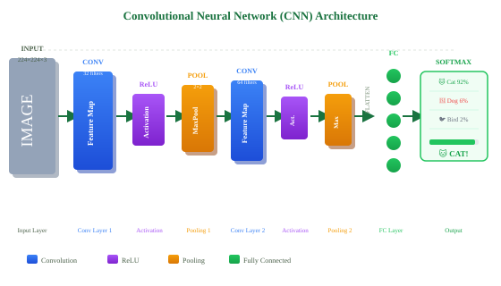

CNN Architecture
Memahami arsitektur Convolutional Neural Network (CNN) secara mendalam — layer Conv, ReLU, Pooling, dan Fully Connected — beserta model-model legendaris.
1. Arsitektur CNN Overview
Convolutional Neural Network (CNN) adalah jenis jaringan saraf tiruan yang dirancang khusus untuk memproses data grid — terutama gambar. CNN revolusioner karena secara otomatis mempelajari fitur dari data, tanpa perlu feature engineering manual.

Tiga blok utama CNN:
- Feature Extraction: Conv + ReLU + Pooling (berulang)
- Flatten: Ubah feature map 3D → vektor 1D
- Classification: Fully Connected Layer + Softmax
2. Convolutional Layer
Layer konvolusi berisi sekumpulan filter yang dapat dipelajari (learnable filters). Setiap filter menghasilkan satu feature map yang merespons pola tertentu dalam gambar.
- Filter kecil (3×3, 5×5) tapi banyak channel depth
- Conv pertama: deteksi tepi/warna sederhana
- Conv dalam: deteksi pola kompleks (mata, roda, teks...)
- Jumlah parameter =
K × K × C_in × C_out + C_out(bias)
import torch
import torch.nn as nn
# Conv2d(in_channels, out_channels, kernel_size, stride, padding)
conv1 = nn.Conv2d(3, 32, kernel_size=3, stride=1, padding=1)
# Input: (batch, 3, 224, 224) → Output: (batch, 32, 224, 224)
conv2 = nn.Conv2d(32, 64, kernel_size=3, stride=1, padding=1)
# Input: (batch, 32, 112, 112) → Output: (batch, 64, 112, 112)
# Menghitung jumlah parameter layer pertama
params = 3 * 32 * 3 * 3 + 32 # kernel + bias
print(f"Parameter Conv1: {params:,}") # 896
3. Activation Function: ReLU
ReLU (Rectified Linear Unit) adalah fungsi aktivasi paling umum dalam CNN. Menambahkan non-linearitas yang memungkinkan jaringan belajar pola kompleks.
f(x) = max(0, x)Nilai negatif → 0 | Nilai positif → tetap sama
| Aktivasi | Formula | Keunggulan | Kelemahan |
|---|---|---|---|
| ReLU | max(0, x) | Cepat, mengatasi vanishing gradient | Dying ReLU (neuron mati permanen) |
| Leaky ReLU | max(0.01x, x) | Mengatasi dying ReLU | Hyperparameter tambahan |
| ELU | x if x>0, α(eˣ−1) if x≤0 | Output rata-rata mendekati 0 | Komputasi lebih berat |
| GELU | x·Φ(x) | Populer di Transformer (GPT, ViT) | Lebih kompleks |
4. Pooling Layer
Pooling mengurangi dimensi spasial feature map — downsampling. Membuat representasi lebih ringkas dan model lebih tahan terhadap pergeseran (translation invariance).
Max Pooling
Ambil nilai maksimum dalam window. Paling umum — mempertahankan fitur paling kuat.
Average Pooling
Rata-rata nilai dalam window. Lebih halus, sering digunakan di akhir arsitektur.
Global Average Pooling
Rata-rata seluruh feature map → satu nilai per channel. Mengganti FC layer di arsitektur modern.
import torch.nn as nn
# MaxPool: window 2×2, stride 2 → output setengah ukuran
maxpool = nn.MaxPool2d(kernel_size=2, stride=2)
# Input: (batch, 64, 112, 112) → Output: (batch, 64, 56, 56)
# Global Average Pooling
gap = nn.AdaptiveAvgPool2d((1, 1))
# Input: (batch, 512, 7, 7) → Output: (batch, 512, 1, 1)
# Setelah flatten: (batch, 512)
avgpool = nn.AvgPool2d(kernel_size=2, stride=2)
5. Fully Connected Layer & Output
Setelah feature extraction, feature map di-flatten menjadi vektor 1D, lalu diproses oleh Fully Connected (FC) layer untuk menghasilkan prediksi akhir.
import torch
import torch.nn as nn
class SimpleCNN(nn.Module):
def __init__(self, num_classes=10):
super().__init__()
# Feature Extraction
self.features = nn.Sequential(
nn.Conv2d(3, 32, 3, padding=1), # (3,224,224) → (32,224,224)
nn.ReLU(inplace=True),
nn.MaxPool2d(2, 2), # (32,224,224) → (32,112,112)
nn.Conv2d(32, 64, 3, padding=1), # (32,112,112) → (64,112,112)
nn.ReLU(inplace=True),
nn.MaxPool2d(2, 2), # (64,112,112) → (64,56,56)
nn.Conv2d(64, 128, 3, padding=1), # (64,56,56) → (128,56,56)
nn.ReLU(inplace=True),
nn.MaxPool2d(2, 2), # (128,56,56) → (128,28,28)
)
# Classifier
self.classifier = nn.Sequential(
nn.Flatten(), # → (128*28*28,)
nn.Linear(128 * 28 * 28, 512),
nn.ReLU(inplace=True),
nn.Dropout(0.5),
nn.Linear(512, num_classes)
)
def forward(self, x):
x = self.features(x)
x = self.classifier(x)
return x # Logits (sebelum softmax)
model = SimpleCNN(num_classes=10)
print(f"Total parameter: {sum(p.numel() for p in model.parameters()):,}")
6. Arsitektur CNN Legendaris
| Model | Tahun | Inovasi Utama | Top-5 ImageNet |
|---|---|---|---|
| AlexNet | 2012 | CNN dalam dengan GPU, ReLU, Dropout | 15.3% |
| VGG-16 | 2014 | 16 layer, kernel 3×3 seragam | 7.3% |
| GoogLeNet | 2014 | Inception module, 22 layer efisien | 6.7% |
| ResNet-50 | 2015 | Skip connection (residual), 50 layer | 5.25% |
| EfficientNet | 2019 | Compound scaling (width/depth/res) | 1.8% |
ResNet memperkenalkan residual connection (shortcut): output layer ditambah langsung ke input beberapa layer kemudian. Mengatasi masalah vanishing gradient dan memungkinkan jaringan sangat dalam (50, 101, 152+ layer) untuk dilatih.
📌 Rangkuman Materi 04
- CNN = Conv + ReLU + Pool (berulang) + Flatten + FC + Softmax.
- Conv layer mempelajari filter secara otomatis dari data.
- ReLU = max(0,x) — menambahkan non-linearitas, mengatasi vanishing gradient.
- Max Pooling mengurangi dimensi 2×, memberikan translation invariance.
- ResNet (2015) memperkenalkan skip connection — memungkinkan jaringan >100 layer.